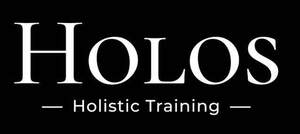

Trade Mark Journal No.2025/029 18 July 2025
UK00004229980 7 July 2025 (9,41)

- Class 9
- Computer software; Computer software programs; Computer programmes; Computer software for education; Education software; Software for computers; Educational computer software; Computer software applications, downloadable; Downloadable computer software applications; Downloadable software applications; Downloadable computer software; Downloadable electronic books; Digital books downloadable from the Internet; Electronic publications; Electronic publications, downloadable; Publications (Electronic -), downloadable; Downloadable electronic publications; Electronic publications (downloadable); Downloadable electronic brochures; Downloadable electronic newsletters; Publications in electronic format; Publications in electronic format [downloadable]; Downloadable e-books; Downloadable publications; Downloadable videos; Downloadable video files; Downloadable applications; Downloadable educational course materials; Downloadable educational media; Publications in electronic form; Computer documentation in electronic form; Downloadable publications in electronic form; Downloadable video recordings; Downloadable video recordings featuring music; Video recordings; Pre-recorded video tapes featuring music; Prerecorded video tapes featuring music; Programs (Computer -) [downloadable software]; Computer programs [downloadable software]; Downloadable computer programs; Computer programs, downloadable; Training software; Downloadable application software; Computer programs; Computer software programs for spreadsheet management; Computer programmes for document management; Computer software programs for database management; All of the aforesaid in relation to educating teachers and staff.
- Class 41
- Education services; Services of schools [education]; Training and education services; Education and training services; Management of education services; Management education services; University education services; Education and instruction services; Education information services; Online education services; Academy services (Education -); Education academy services; Academy education services; Sports education services; Technological education services; Educational services for providing courses of education; Adult education services; Primary education services; Vocational education and training services; Physical education services; Higher education services; Educational services; Dietary education services; Sporting education services; Kindergarten services [education or entertainment]; Education services relating to health; Education services relating to vocational training; Education services related to the arts; Linguistic education and training services; Computer education training services; Education services relating to industry; Education services relating to nutrition; Educational services in the healthcare sector; Advisory services relating to education; Educational and training services; Education services relating to management; Educational consultancy services; Education services relating to sports; Educational and teaching services; Education services relating to computers; Consultation services relating to business education; Accreditation of educational services; Education services relating to languages; Education, entertainment and sport services; Education services relating to cooking; Computer assisted education services; Teaching services; Education academy services for teaching languages; Educational assessment services; Examination services (Educational -); Educational examination services; Physical fitness education services; Education services relating to physical fitness; Physical fitness training services; Physical health education; Educational services relating to physical fitness; Physical education; Tuition in physical fitness; Physical fitness tuition; Physical fitness centre services; Physical fitness instruction; Physical fitness assessment services for training purposes; Physical fitness centres; Physical training services; Health and fitness training; Consultancy relating to physical fitness training; Physical education instruction; Provision of physical education; Instruction courses relating to physical fitness; Physical education facilities (Provision of -); Fitness training services; Computer assisted physical education services; Provision of educational health and fitness information; Conducting physical fitness conditioning classes; Exercise [fitness] training services; Fitness and exercise training services; Health and wellness training; Training services relating to fitness; Health education; Education and training services in the field of occupational health and safety; Health club services [exercise]; Sports and fitness services; Education services relating to the development of childrens' mental faculties; Academic mentoring of school age children; Boarding school education; Nursery school services [educational]; Secondary school educational services; Pre-school education; Pre-school teaching; Provision of educational entertainment services for children in after school centers; Conducting of instructional, educational and training courses for young people and adults; School services for the teaching of languages; Education, teaching and training; Teaching at junior high schools; School services; Arranging and conducting of day school courses for adults; Education academy services for teaching art history; Education academy services for teaching construction drafting; Teaching academy services; Teaching at elementary schools; Arranging for students to participate in educational courses; Training of sports teachers; Providing educational entertainment services for children in after-school centers; Boarding school services; Academies [education]; Teaching of diet education; Arranging for students to participate in educational activities; Training for parents in parenting skills; Educational services provided by senior high schools; School courses relating to study assistance; Training of teachers; Education; Training or education services in the field of life coaching; Training of non-medical staff in the care of children; Educational services for teaching keyboard writing; Vocational education; Physical fitness instruction for adults and children; Educational services provided by a school; Medical training and teaching; Sports tuition, coaching and instruction; Education and training; Teacher training services; Providing of training, teaching and tuition; Educating at senior high schools; Preparatory schools; Arranging and conducting of youth soccer training programs; Educational services for teaching manual writing; Educational services provided for children; Team building (education); Providing courses of training for young people; Providing courses of instruction for young people; Education and instruction; Organisation of educational activities for summer camps; Publication of educational teaching materials; Computer education training; Organisation of teaching activities; Providing courses of instruction at high school level; Boarding schools; Schools (Boarding -); Summer camps [entertainment and education]; Adult tuition; Online academic library services; Conducting classes in exercise; Conducting fitness classes; Conducting of classes; Exercise classes; Conducting classes in nutrition; Exercise and fitness classes; Arranging and conducting of classes; Conducting workshops [training]; Conducting training seminars; Arranging and conducting of training courses; Workshops (Arranging and conducting of -) [training]; Arranging and conducting of workshops [training]; Arranging and conducting of training workshops; Arranging and conducting of lectures for training purposes; Arranging and conducting of training seminars; Conducting training courses relating to diet online; Conducting training sessions on physical fitness online; Conducting of courses; Conducting training courses relating to nutrition online; Conducting of courses relating to administrative training; Arranging and conducting of soccer training programs; Educational services provided by schools; Educational services in the nature of correspondence schools; Educational services provided for teachers of children; Providing of further training courses; Providing courses of training; Providing of continuous training courses; Providing of training; Providing training; Providing courses of instruction; Training and further training consultancy; Providing continuing medical education courses; Provision of training courses; Training courses (Provision of -); Providing online training seminars; Arranging of training courses; Providing continuing legal education courses; Educational services for providing courses of instruction; Training courses; Providing online courses of instruction; Vocational training courses (Provision of -); Providing courses of instruction at post-graduate level; Postgraduate training courses; Consultancy services relating to the development of training courses; Providing training and educational examination for certification purposes; Providing computer assisted courses of instruction; Arranging professional workshop and training courses; Educational certification services, namely, providing training and educational examination; Arrangement of training courses in teaching institutes; Providing courses of instruction at college level; Arranging teaching programmes; Arranging of seminars relating to training; Organisation of seminars relating to training; Arranging of conferences relating to training; Arranging of seminars relating to education.
HOLOS HOLISTIC TRAINING LTD